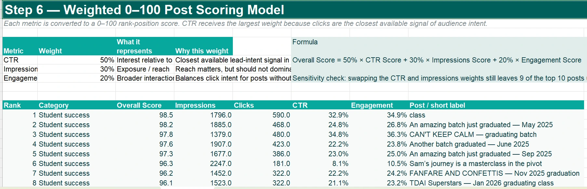

INTERNSHIP · THE DATA & AI INSTITUTE
Operations Data Analyst Intern
Worked across LinkedIn performance reporting, student survey analytics and a natural-language GA4 analytics prototype. Recognised as Most Valuable Intern #3.
I'm Mike — a Melbourne-based junior data analyst and Computer Science student majoring in Data Science. I turn messy questions into clear analysis, useful dashboards and tools people can actually use.
Start with the decision someone needs to make — not just the data that happens to be available.
01 — 04BEHIND THE NUMBERS
My favourite projects begin with a straightforward question: what does the business actually need to know?
I'm studying Computer Science at Deakin University, majoring in Data Science. Alongside university, I've worked on analytics projects at The Data & AI Institute and helped build PinKenya, a Kenyan health-tech venture.
Those experiences have made one thing clear: a technically correct answer isn't always a useful one. The work has to be understandable, trustworthy and connected to a decision.
Outside the screen, football keeps me competitive. I bring the same curiosity and team-first approach to analytics.
SELECTED INTERNSHIP WORK
Three different problems. One approach: make the analysis useful to the person making the decision.

Look beyond impressions and weigh clicks, engagement and reach against the business question.
These are actual screenshots, including original aggregated figures. This is a private review preview; TDAI clearance is required before publishing project images publicly.
Real problems, considered methods, and what each project was built to answer. Eight projects, real interfaces, and the decisions behind them. This review edition shows original TDAI figures and is not cleared for public deployment.
A combination of hands-on projects, study and building things for real users.
FULL EXPERIENCE ON LINKEDIN ↗Worked across LinkedIn performance reporting, student survey analytics and a natural-language GA4 analytics prototype. Recognised as Most Valuable Intern #3.
Helping shape digital patient access, appointment booking and healthcare technology solutions. A constant reminder to connect product decisions to real operational problems.
Supported lead generation, partner outreach and product demonstrations for a Kenyan legal-tech startup. Learned to translate technical products into business value for different audiences.
Major in Data Science. Building foundations in programming, statistics, databases, software systems and analytical problem solving. Expected completion 2028.
I use different tools depending on the question — from exploratory analysis to dashboards, databases and small applications.
NEXT MATCH / OPEN FOR CONVERSATION
I'm looking for part-time junior data analyst opportunities in Melbourne. If you're working on something interesting, I'd love to hear about it.